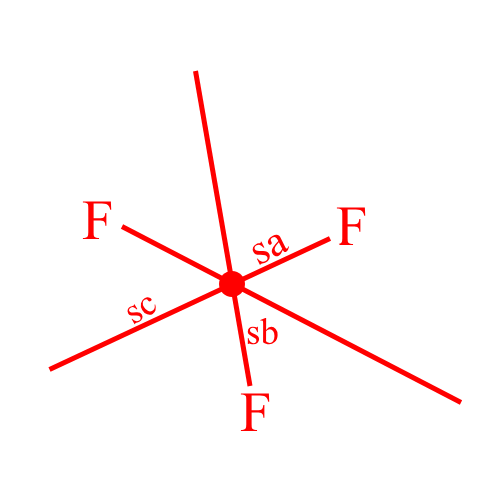

Háromszögek csoportosítása
Szögek szerint
Derékszögű háromszög:
Egyik belső szöge pontosan 90o
Hegyesszögű háromszög:
Minden belső szöge 80o
Tompaszögű háromszög:
Egyik belső szöge tompaszög
Oldalak szerint
Szabályos/Egyenlő
oldalú háromszög:
Minden oldala egyenlő hosszú
Egyenlő szárú háromszög:

egyforma oldala van
Általános háromszög:
Mind a 3 oldala különböző
Háromszögek nevezets vonalai, és pontjai
Magasságvonal,pont
Magasságvonal: A háromszög csúcsából induló szemközti oldalra merőleges egyenes
- jele: ma, mb, mc
Magasságpont: Magasságvonalak metszéspontja
- jele: M
Súlyvonal,pont

Súlyvonal: A csúcsot a szemközti oldal felezőpontjával összekötő egyenes
- jele: sa, sb, sc
Súlypont: Súlyvonalak metszéspontja
- jele: S
Középvonal
Középvonal: Két oldalfelezőpontot összekötő vonal
- jele: k
Tulajdonságai:
- középvonal párhuzamos a szemközti oldallal
- fele olyan hosszú